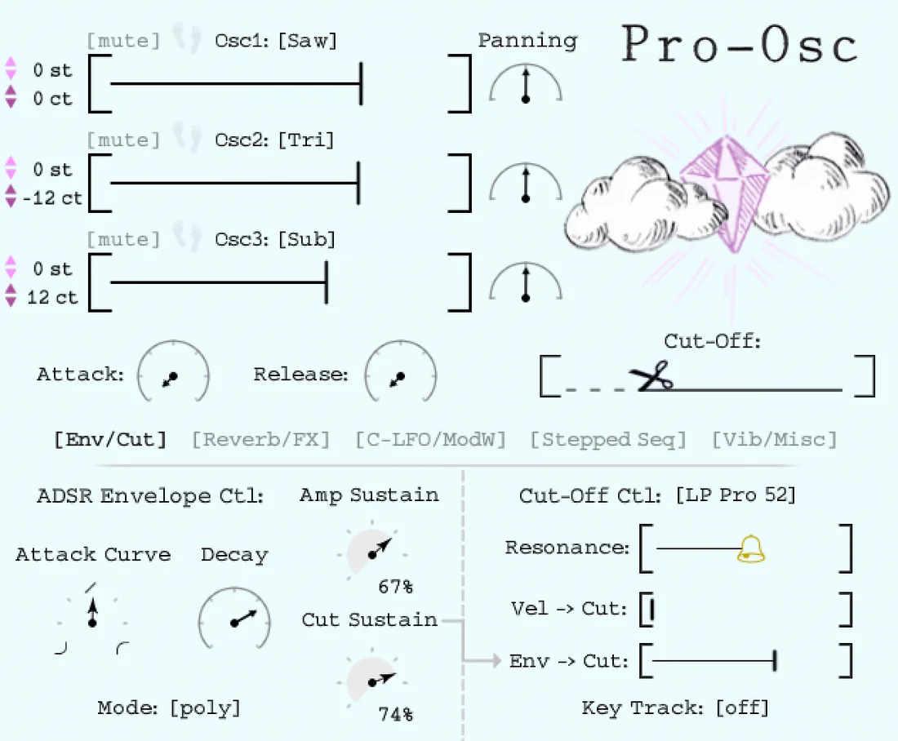

See it move
Watch Pro-Osc in action.

Prefer a walkthrough? Watch the Pro-Osc tutorial →
A vintage-era analog synth, sampled into a modern instrument.
Built from the raw oscillators of a Curtis-filtered vintage analog synth — then wrapped in a hand-drawn interface. Classic cinematic warmth that fills the room, and 83 handcrafted presets with no filler. Leads, basses, pads, keys, brass — every one performable from the mod wheel.
Four presets and a full track — every sound below was made with Pro-Osc alone.
